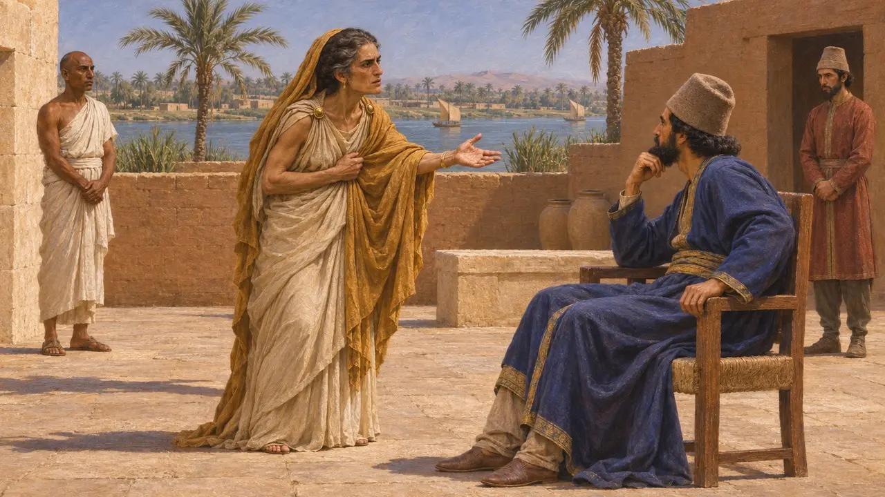
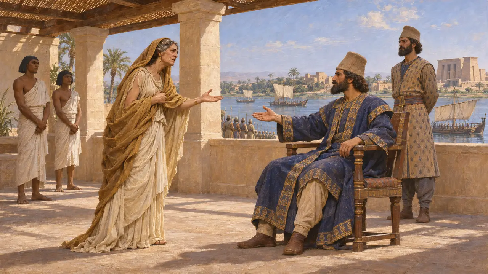
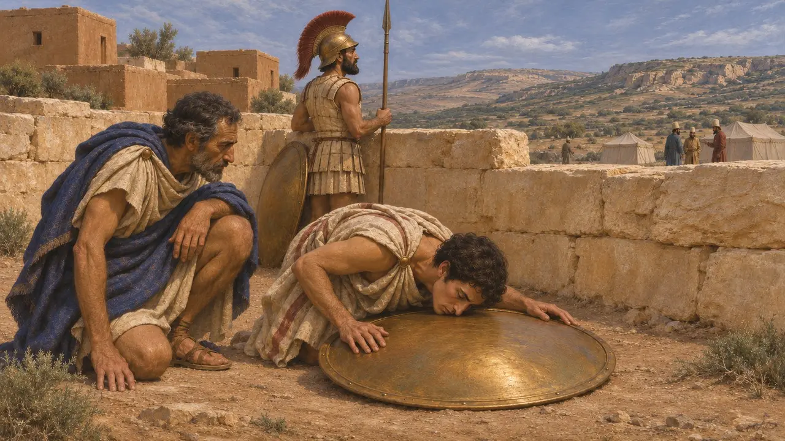
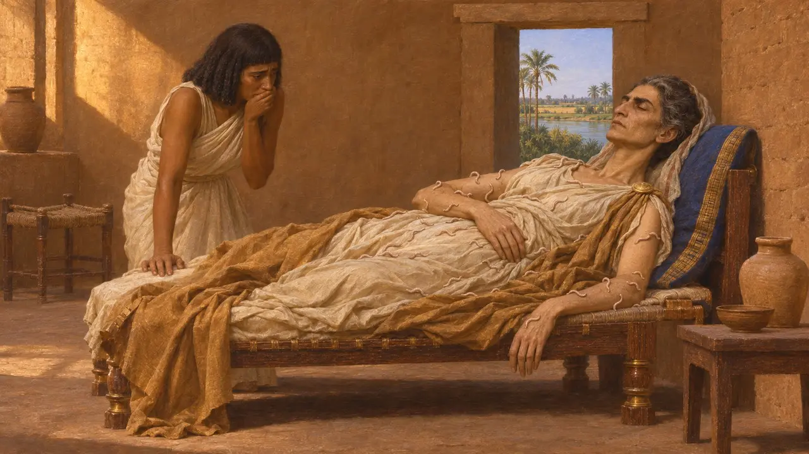
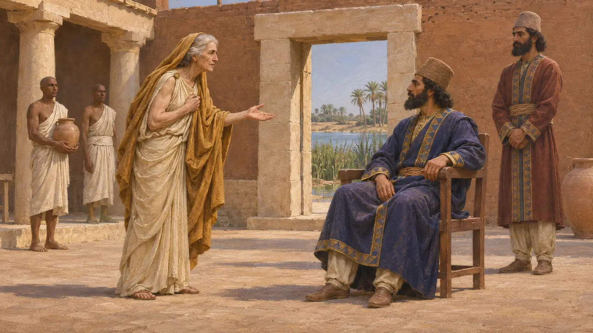

Pheretime
Perslerden yardım isteyen ve yaklaşık MÖ 515'te Barka'da oğlunun intikamını alan bir Kyrene kralının annesi
Pheretime, Libya'daki Kyrene'nin kralı III. Arkesilaos'un annesiydi. Herodotos, hikâyesini 4. kitapta anlatır: oğlu Barka'da öldürüldükten sonra Pers'in Mısır valisi Aryandes'e başvurdu ve bir Pers kuvveti Barka'yı ele geçirdi. Herodotos'un anlattığı biçimiyle sonu, tanrıların gazabı üzerine ahlaki bir öyküdür.
Oyunda: Pheretime, Ansiklopedi'de Barka kuşatmasına dair olay maddesinde ve Perslerin Mısır'daki varlığına dair ilgili maddelerde anılır. Oyunda kendine ait bir figürü, yapısı ya da mekaniği yoktur.

Bir Kyrene kralının annesi
Antik anlatıHerodotos, Pheretime'nin Kyrene'yi yöneten Battos hanedanından Kral III. Arkesilaos'un annesi olduğunu söyler. Oğlu halkıyla arası bozulunca Pheretime Kıbrıs'taki Salamis'e gitti; oğlu ise önce Samos'a, sonra Barka'ya gitti. Arkesilaos Barka'da öldürüldükten sonra, Herodotos'a göre Pheretime intikam almak için Mısır'a gitti.
Herodotus 4.162-165

Aryandes'e Başvur
Antik anlatıHerodotos, Pheretime'nin Mısır'daki Pers valisi Aryandes'e gidip ondan oğlunun intikamını almasını istediğini söyler. Arkesilaos'un, Kyrene'yi Pers egemenliği altına soktuğu için öldüğünü ileri sürdü. Herodotos'a göre Aryandes'in sefer için kendi nedenleri vardı, yine de ona bir ordu ve bir donanma verdi.
Herodotus 4.165-167

Barka kuşatması
Antik anlatıHerodotos'a göre Persler Barka'yı dokuz ay kuşattı; kazdıkları lağımları Barkalılar bronz bir kalkan sayesinde fark etti. Ardından Persler kenti bir hileyle aldı: tutmayı düşünmedikleri şartlara yemin ettiler. Pheretime ileri gelenleri kazığa oturttu ve Herodotos'a göre onların eşlerinin göğüslerini kestirip surun boyunca dizdirdi. Herodotos, Perslerin hayatta kalan Barkalıları Baktriya'ya yerleştirdiğini de ekler.
Herodotus 4.200-204

Onun ölümü
Geç dönem efsanesiHerodotos, Pheretime'nin Mısır'a döndüğünü ve bedenini saran kurtlar yüzünden öldüğünü anlatır. Bundan, aşırı intikamın tanrıların gazabını çektiği dersini çıkarır. Bu ahlaki bir öyküdür ve ölümünün biçimi yalnızca Herodotos'tan bilinmektedir.
Herodotus 4.205

Tarihçilerin sorguladıkları
TartışmalıHerodotos'un anlatımı ayrıntılı olan tek anlatımdır ve Kyrene ile Barka geleneği onu biçimlendirmiş olabilir. Tarihçiler tarihi tartışır; genellikle MÖ 515 civarına yerleştirilir. Aryandes'in kendi hesabına değil de Kral adına ne ölçüde hareket ettiği de tartışmalıdır. Olayı çevreleyen dramatik anlatıyı sınamak zordur.
P. Briant, From Cyrus to Alexander, 2002
Kaynaklar
- Herodotus 4.162-167
- Herodotus 4.200-205
- P. Briant, From Cyrus to Alexander, 2002